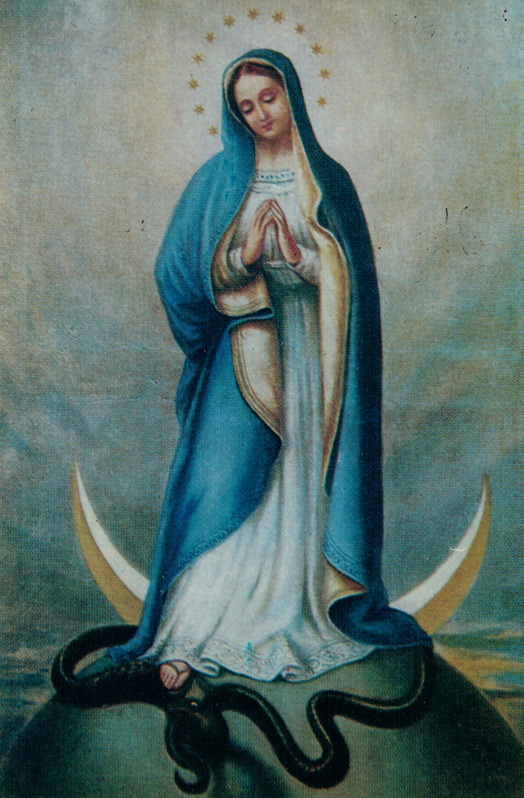

Congregación

Somos una Congregación de derecho pontificio, llamada Hijos de Santa María Inmaculada, fundada por el Venerable P. José Frassinetti, preocupado por la disminución de las vocaciones.
A inesperada muerte (02.01.1868), tomó la dirección de la comunidad don Antonio Piccardo, inmediatamente después de haber sido ordenado sacerdote (06.06.1868).
Siguiendo la espiritualidad del Venerable P. Frassinetti, pero con gran creatividad pedagógica y organizativa, Piccardo guió la comunidad a un crecimiento constante que se expresa finalmente con la transformación de la Pía Casa en Pía Obra y después de ésta en Congregación religiosa.
En este último pasaje tuvo un rol significativo también el Papa Pío X, que después de haber beneficiado a P. Piccardo de una sincera amistad, lo animó y lo apoyó en la transformación de la Obra en Congregación y confirió casi inmediatamente (cosa más única que rara) el Decretum Laudis.
La espiritualidad eucarístico-mariana del Venerable P. Frassinetti fue, por lo tanto, recogida por una comunidad, en la que Pietro Olivari y luego Don Antonio Piccardo desempeñaron un papel decisivo.
Este último llevó el crecimiento de esta comunidad a la transformación en una congregación religiosa, para cuya creación el Papa San Pío X tuvo un papel particularmente meritorio.